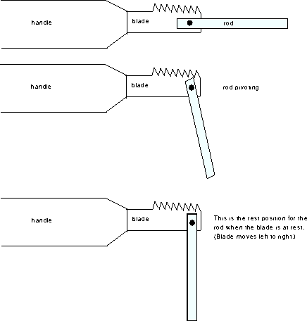

![[HOME]](jigsaw_files/home.gif) The Geometry Center Home Page
The Geometry Center Home Page
Bolt a metal rod to the end of the blade of a jig saw so that the rod can pivot in one plane. Here is a sketch of the object:

In the first picture the rod and blade are facing to the right. However, the rod can pivot. Therefore with the motor off, if the rod is not held facing right, it will fall (second picture) and point downward (third picture). When the motor is on, the blade moves left to right. The puzzle is about how turning the motor on effects the natural position of the rod.
What would you expect to happen if with the motor running you point the object so that the rod and the blade face directly upward? Will the rod fall to point downward? Will it continue to point upward direction? Or will it instead point at some angle from the vertical? Consider the case in which the length of the rod is much larger than the gravitational acceleration over the square of the frequency of the jigsaw blade.
This puzzle is by no means easy. However, since it is not too hard to visualize what is happening physically, I wanted to give let you think about the situation before I say what happens and why.
geometry.puzzles,geometry.research, 9 Jan 1995.
Answer: For a sufficiently long rod, the rod will continue to point upward.
Why: This is a famous physics problem, but the explanation I give here is mathematical.
The equation for the angle x of the rod is:
L x'' + (-g + a(t)) x = 0
where L is the length of the rod (if we assume that the mass of the rod is concentrated at the end), g is the gravitational acceleration, and a(t) is the acceleration of the jigsaw blade. We want to show the stability of the equilibrium point where the rod points upward with no angular velocity. Call this equilibrium point E. Note that this corresponds to a point in phase space, the space angular velocity vectors of the form (x,x')=(angle, angular velocity).
Since the saw blade moves very quickly up and down, the acceleration of the blade is much larger than g. Therefore we can treat g as a small perturbation. In fact, we show stability in the case of g=0 and moreover, that stability cannot be destroyed by small perturbations, which means stability persists when g is present.
Assume that a(t) is constant through each half-period. The gravity-free equation is
x" + w^2 x = 0 when accelerated downward, and
x" - w^2 x = 0 when accelerated upward.
In the second case, this rod behaves like the standard swinging pendulum, in which the equilibrium point at the top of the swing is unstable. Thus the rod accelerates away from the vertical. Since the length of the rod is assumed large compared to the time that the saw blade is accelerated downward, the rod does not move very far during a single half-period of the saw blade. For the first equation, the rod's acceleration is restoring, i.e. it points toward the vertical. Thus the restoring accleration during the down phase competes with the destabilizing acceleration during the up phase. Interestingly, the stabilization wins over destabilization. Here is a geometrical reason behind this phenomenon.
The points (x, x') move in ellipses for one half period; we stretch these ellipses into circles by setting Y=x'/w (and keeping X=x). The equations become:
X'= w Y ***
Y'= -/+ w X.
So for half the period now we have the usual rotation with angular velocity w. For the other half period a hyperbolic rotation with the same rate w. That is, the flow moves towards the origin along the line x=y, moves away from the origin along the line x=-y, and all other points move on hyperbolas.
How do we combine the information about the two half-periods to get information about the total system? Rather than looking at the entire flow for stability, we can look at only the angular velocity vector of the rod when the saw blade is at its highest point. This turns out to give us enough information to determine stability; let P be the two by two matrix corresponding to the linearized system at the equilibrium point. It gives the angular velocity vector of the rod after the blade goes one period based on the rod's current position. In other words, if T is the period of the blade, P is the matrix such that for the linearized system:
(x(T),x'(T))= P (x(0), x'(0)).
It turns out that the equilibrium point is stable exactly when all iterates of the matrix P are bounded. P has determinant one, since it must be area preserving since the system is conservative.
The key observation is that the composition of the rotation in equation *** and the "equal strength" hyperbolic rotation in equation *** turns every point by a nonzero angle. This is because the angular velocity of the vectors under the rotational flow is w, while the angular velocity of the vectors under the hyperbolic flow is strictly less (except on the x- and y- axes, which are passed intantaneously). This is clear geometrically since the speed of both vector fields is the same, while one is perpenducular to radius vector and the other is not, and thus "wastes" itself on lengthening or shortening rather than just rotating. Thus the composition of the two turns every initial condition by a nonzero amount (less than pi, if the frequency of the jigsaw is high enough).
In other words, matrix P for angular velocity of the system after time T has no real eigenvectors and thus must diagonalize to diag(lambda_1,lambda_2) with lambdas on the unit circle. Thus P has all its iterates bounded.
Finally, the above property of P is not destroyed by a small perturbation, and thus adding g does not affect stability.
Thus E is a stable equilibrium.
This article is based on a seminar and interview with RPI professor Mark Levi during his recent visit to the Geometry Center.
References to follow with Solution to Puzzle 2.
What happens as the length of the rod becomes arbitrarily small?
What happens as the length of the rod becomes arbitrarily small? As the rod's length vanishes, there are infinitely many regions in which the equilibrium point is stable.
Because of this relationship between the differential equation and the the space of two by two matrices with determinant one, the proof of stability relies on the geometry of this space of two by two matrices with determinant one. Every two by two matrix with determinant one can be written as the product of a symmetric matrix and a rotation.
Each symmetric matrix is uniquely determined by the expansion direction and the amount of expansion, where the expansion direction is irrelevant if the amount of expansion is one. Thus the set of symmetric matrices is homeomorphic to the open disk.
Each rotation matrix is uniquely determined by an angle of rotation. The set of rotation matrices is homeomorphic to the circle.
Combining the last two paragraphs, the set of two by two matrices with determinant one is a solid torus. Also notice that if M is any symmetric matrix times a rotation of pi/2, then M to the fourth power is equal to M. Thus at the angle pi/2, every matrix is stable. In fact an open neighborhood of the set of these matrices consists of stable matrices. This means that every time you go around the solid torus, you hit a region of stability.
It turns out that if the length goes to zero, the matrix goes around the torus infinitely many times. More precisely, as the length shortens so that the number of vertical moments (i.e. moments during the jigsaw's period when the pendulum becomes vertical) changes by 5 or more, the matrix goes at least once around the torus.
Thus as the length of the rod decreases to zero, there are infinitely many regions of stability.
As with the previous part, this was based on a seminar, interview, and subsequent correspondence with Mark Levi.
References: Jearl Walker's "The flying circus of Physics" discusses the inverted pendulum and has other references.
The Geometry Center Home Page
Comments to:
webmaster@www.geom.uiuc.edu
Created: May 22 1995 ---
Last modified: Jun 18 1996